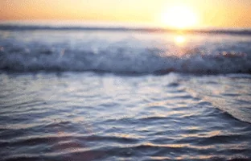

Misión
Cree esta organizacion con el proposito de proteger especies en riesgo, peligro de extincion y de las mas afectadas por cambios climaticos. Queremos llegar a todo Puerto Rico, en nuestra isla interactuamos constantemente con el mar y todos sus habitantes, la protección marina es necesaria y debe ser prioridad para todos los puertorriqueños.
Creando conciencia sobre problemas como la sobre pesca, pesca ilegal, contaminacion y el cambio climatico, podemos hacer
el cambio y salvar a miles de animales.
Visión
Espero lograr que en un futuro que las personas sean mas concientes,vean como pueden afectar a los animales marinos de forma positiva,
y evitar afectarlos negativamente. Espero tambien ver playas mas limpias, ademas de pesca moderada y legal.
